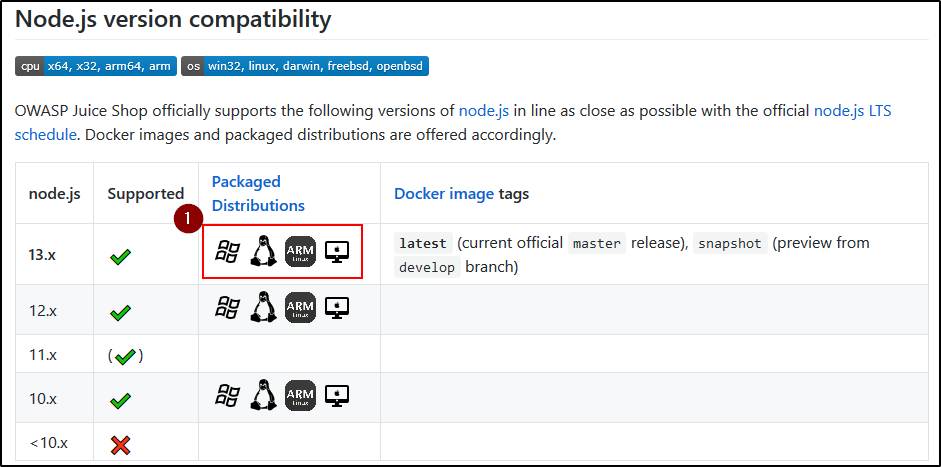

Go to the Github repo and download the version you want, based on the node version:
(In this case, we will use the Node.js 13.x version for Linux) 
(Scroll Down)
Download the tar and the md5 (md5 is used to verify the file)

Now we need to install the appropiate Node.js version (in this case, the 13.x)
To do that, go on the Node.js Github (https://github.com/nodejs/node)
or on the ufficial site (in this case, we are going to use the Kali/Devian Jessie installation)
https://nodejs.org/en/download/package-manager/

https://github.com/nodesource/distributions/blob/master/README.md

To conclude, just follow those step from Juice-Shop Github
(Jump the step of dowloading from Github, we already done that)